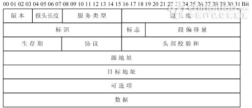

OSI七层协议模型与TCPIP四层模型
转自 OSI七层协议模型、TCP/IP四层模型学习笔记
转自TCP/IP四层协议模型与ISO七层模型（TCP/IP系统学习（2））
OSI 与 TCP/IP 之间关系
- OSI引入了服务、接口、协议、分层的概念；TCP/IP借鉴了OSI的这些概念建立TCP/IP模型。
- OSI先有模型，后有协议，先有标准，后进行实践；而TCP/IP则相反，先有协议和应用再提出了模型，且是参照的OSI模型。
- OSI是一种理论下的模型；而TCP/IP已被广泛使用，成为网络互联事实上的标准。
| OSI七层网络模型 | TCP/IP四层概念模型 | 对应网络协议 | 物理设备 |
|---|---|---|---|
| 应用层（Application） | 应用层 | TFTP、NFS、WAIS、SMTP、HTTP（Hyper text transfer protocol）、FTP（file transfer protocol）、SMTP（simple mail transfer rotocol）、POP3（post office protocol 3）、IMAP4（Internet mail access protocol） | |
| 表示层（Presentation） | Telnet、Rlogin、SNMP、Gopher | ||
| 会话层（Session） | SMTP、DNS | ||
| 传输层（Transport） | 传输层 | TCP、UDP | |
| 网络层（Network） | 网路层 | IP, ICMP, ARP, RARP, AKP, UUCP | 路由器 |
| 数据链路层（Data Link） | 数据链路层 | FDDI、Ethernet、Arpanet、PDN、SLIP、PPP | 交换机 |
| 物理层（Physical） | IEEE 802.1A、IEEE 802.2到IEEE 802.11 |
RIP基于UDP
BGP基于TCP
OSPF和EIGRP基于IP。
这些在TCP/IP协议栈中定义的路由协议用于发现和维护前往目的地的最短路径。你可以认为它们不属于网络层协议
OSI模型
七层结构记忆方法：应、表、会、传、网、数、物
OSI模型，即开放式通信系统互联参考模型(Open System Interconnection,OSI/RM,Open Systems Interconnection Reference Model)
是国际标准化组织(ISO)提出的一个试图使各种计算机在世界范围内互连为网络的标准框架，简称OSI。
每层含义
物理层
第一层负责最后将信息编码成电流脉冲或其它信号用于网上传输。它由计算机和网络介质之间的实际界面组成，可定义电气信号、符号、线的状态和时钟要求、数据编码和数据传输用的连接器。
如最常用的RS-232规范、10BASE-T的曼彻斯特编码以及RJ-45就属于第一层。所有比物理层高的层都通过事先定义好的接口而与它通话。如以太网的附属单元接口（AUI），一个DB-15连接器可被用来连接层一和层二。数据链路层
数据链路层通过物理网络链路提供可靠的数据传输。不同的数据链路层定义了不同的网络和协议特征，其中包括物理编址、网络拓扑结构、错误校验、帧序列以及流控。物理编址（相对应的是网络编址）定义了设备在数据链路层的编址方式；网络拓扑结构定义了设备的物理连接方式，如总线拓扑结构和环拓扑结构；错误校验向发生传输错误的上层协议告警；数据帧序列重新整理并传输除序列以外的帧；流控可能延缓数据的传输，以使接收设备不会因为在某一时刻接收到超过其处理能力的信息流而崩溃。数据链路层实际上由两个独立的部分组成，介质存取控制（Media Access Control,MAC）和逻辑链路控制层（Logical Link Control,LLC）。
MAC描述在共享介质环境中如何进行站的调度、发生和接收数据。MAC确保信息跨链路的可靠传输，对数据传输进行同步，识别错误和控制数据的流向。一般地讲，MAC只在共享介质环境中才是重要的，只有在共享介质环境中多个节点才能连接到同一传输介质上。IEEE MAC规则定义了地址，以标识数据链路层中的多个设备。逻辑链路控制子层管理单一网络链路上的设备间的通信，IEEE 802.2标准定义了LLC。LLC支持无连接服务和面向连接的服务。在数据链路层的信息帧中定义了许多域。这些域使得多种高层协议可以共享一个物理数据链路。网络层
网络层负责在源和终点之间建立连接。它一般包括网络寻径，还可能包括流量控制、错误检查等。相同MAC标准的不同网段之间的数据传输一般只涉及到数据链路层，而不同的MAC标准之间的数据传输都涉及到网络层。例如IP路由器工作在网络层，因而可以实现多种网络间的互联。
传输层
传输层向高层提供可靠的端到端的网络数据流服务。传输层的功能一般包括流控、多路传输、虚电路管理及差错校验和恢复。流控管理设备之间的数据传输，确保传输设备不发送比接收设备处理能力大的数据；多路传输使得多个应用程序的数据可以传输到一个物理链路上；虚电路由传输层建立、维护和终止；差错校验包括为检测传输错误而建立的各种不同结构；而差错恢复包括所采取的行动（如请求数据重发），以便解决发生的任何错误。传输控制协议（TCP）是提供可靠数据传输的TCP/IP协议族中的传输层协议。
会话层
会话层建立、管理和终止表示层与实体之间的通信会话。通信会话包括发生在不同网络应用层之间的服务请求和服务应答，这些请求与应答通过会话层的协议实现。它还包括创建检查点，使通信发生中断的时候可以返回到以前的一个状态。
表示层
表示层提供多种功能用于应用层数据编码和转化，以确保以一个系统应用层发送的信息可以被另一个系统应用层识别。表示层的编码和转化模式包括公用数据表示格式、性能转化表示格式、公用数据压缩模式和公用数据加密模式。
公用数据表示格式就是标准的图像、声音和视频格式。通过使用这些标准格式，不同类型的计算机系统可以相互交换数据；转化模式通过使用不同的文本和数据表示，在系统间交换信息，例如ASCII（American Standard Code for Information Interchange，美国标准信息交换码）；标准数据压缩模式确保原始设备上被压缩的数据可以在目标设备上正确的解压；加密模式确保原始设备上加密的数据可以在目标设备上正确地解密。
表示层协议一般不与特殊的协议栈关联，如QuickTime是Applet计算机的视频和音频的标准，MPEG是ISO的视频压缩与编码标准。常见的图形图像格式PCX、GIF、JPEG是不同的静态图像压缩和编码标准。
应用层
应用层是最接近终端用户的OSI层，这就意味着OSI应用层与用户之间是通过应用软件直接相互作用的。注意，应用层并非由计算机上运行的实际应用软件组成，而是由向应用程序提供访问网络资源的API（Application Program Interface，应用程序接口）组成，这类应用软件程序超出了OSI模型的范畴。应用层的功能一般包括标识通信伙伴、定义资源的可用性和同步通信。因为可能丢失通信伙伴，应用层必须为传输数据的应用子程序定义通信伙伴的标识和可用性。定义资源可用性时，应用层为了请求通信而必须判定是否有足够的网络资源。在同步通信中，所有应用程序之间的通信都需要应用层的协同操作。
OSI的应用层协议包括文件的传输、访问及管理协议（FTAM） ，以及文件虚拟终端协议（VIP）和公用管理系统信息（CMIP）等。
TCP/IP模型
TCP/IP参考模型分为四个层次：应用层、传输层、网络互连层和主机到网络层。如图所示。（四层模型只是标准模型，实际使用中并不是唯一的模型，比如RFC 871中描述的ARPAnet模型有3层：网络接口层、主机到主机层、处理/应用层。）
1. 主机到网络层
实际上TCP/IP参考模型没有真正描述这一层的实现，只是要求能够提供给其上层-网络互连层一个访问接口，以便在其上传递IP分组。由于这一层次未被定义，所以其具体的实现方法将随着网络类型的不同而不同。
2. 网络互连层
网络互连层是整个TCP/IP协议栈的核心。它的功能是把分组发往目标网络或主机。同时，为了尽快地发送分组，可能需要沿不同的路径同时进行分组传递。因此，分组到达的顺序和发送的顺序可能不同，这就需要上层必须对分组进行排序。
网络互连层定义了分组格式和协议，即IP协议（Internet Protocol）。
网络互连层除了需要完成路由的功能外，也可以完成将不同类型的网络（异构网）互连的任务。除此之外，网络互连层还需要完成拥塞控制的功能。
3. 传输层
在TCP/IP模型中，传输层的功能是使源端主机和目标端主机上的对等实体可以进行会话。在传输层定义了两种服务质量不同的协议。即：传输控制协议TCP（transmission control protocol）和用户数据报协议UDP（user datagram protocol）。
TCP协议是一个面向连接的、可靠的协议。它将一台主机发出的字节流无差错地发往互联网上的其他主机。在发送端，它负责把上层传送下来的字节流分成报文段并传递给下层。在接收端，它负责把收到的报文进行重组后递交给上层。TCP协议还要处理端到端的流量控制，以避免缓慢接收的接收方没有足够的缓冲区接收发送方发送的大量数据。
UDP协议是一个不可靠的、无连接协议，主要适用于不需要对报文进行排序和流量控制的场合。
4. 应用层
TCP/IP模型将OSI参考模型中的会话层和表示层的功能合并到应用层实现。
应用层面向不同的网络应用引入了不同的应用层协议。其中，有基于TCP协议的，如文件传输协议（File Transfer Protocol，FTP）、虚拟终端协议（TELNET）、超文本链接协议（Hyper Text Transfer Protocol，HTTP），也有基于UDP协议的。
IP层传输单位是IP分组，属于点到点的传输；TCP层传输单位是TCP段，属于端到端的传输

TCP/IP报文格式
1. IP报文格式
以太网帧帧头
IP协议是TCP/IP协议族中最为核心的协议。它提供不可靠、无连接的服务，也即依赖其他层的协议进行差错控制。在局域网环境，IP协议往往被封装在以太网帧中传送。而所有的TCP、UDP、ICMP、IGMP数据都被封装在IP数据报中传送。
TCP/IP报文封装

其中:1. 版本（Version）字段：占4比特。用来表明IP协议实现的版本号，当前一般为IPv4，即0100。 2. 报头长度（Internet Header Length，IHL）字段：占4比特。是头部占32比特的数字，包括可选项。普通IP数据报（没有任何选项），该字段的值是5，即160比特=20字节。此字段最大值为60字节。 3. 服务类型（Type of Service ，TOS）字段：占8比特。其中前3比特为优先权子字段（Precedence，现已被忽略）。第8比特保留未用。第4至第7比特分别代表延迟、吞吐量、可靠性和花费。当它们取值为1时分别代表要求最小时延、最大吞吐量、最高可靠性和最小费用。这4比特的服务类型中只能置其中1比特为1。可以全为0，若全为0则表示一般服务。服务类型字段声明了数据报被网络系统传输时可以被怎样处理。例如：TELNET协议可能要求有最小的延迟，FTP协议（数据）可能要求有最大吞吐量，SNMP协议可能要求有最高可靠性，NNTP（Network News Transfer Protocol，网络新闻传输协议）可能要求最小费用，而ICMP协议可能无特殊要求（4比特全为0）。实际上，大部分主机会忽略这个字段，但一些动态路由协议如OSPF（Open Shortest Path First Protocol）、IS-IS（Intermediate System to Intermediate System Protocol）可以根据这些字段的值进行路由决策。 4. 总长度字段：占16比特。指明整个数据报的长度（以字节为单位）。最大长度为65535字节。 5. 标志字段：占16比特。用来唯一地标识主机发送的每一份数据报。通常每发一份报文，它的值会加1。 6. 标志位字段：占3比特。标志一份数据报是否要求分段。 7. 段偏移字段：占13比特。如果一份数据报要求分段的话，此字段指明该段偏移距原始数据报开始的位置。 8. 生存期（TTL：Time to Live）字段：占8比特。用来设置数据报最多可以经过的路由器数。由发送数据的源主机设置，通常为32、64、128等。每经过一个路由器，其值减1，直到0时该数据报被丢弃。 9. 协议字段：占8比特。指明IP层所封装的上层协议类型，如ICMP（1）、IGMP（2） 、TCP（6）、UDP（17）等。 10. 头部校验和字段：占16比特。内容是根据IP头部计算得到的校验和码。计算方法是：对头部中每个16比特进行二进制反码求和。（和ICMP、IGMP、TCP、UDP不同，IP不对头部后的数据进行校验）。 11. 源IP地址、目标IP地址字段：各占32比特。用来标明发送IP数据报文的源主机地址和接收IP报文的目标主机地址。 12. 可选项字段：占32比特。用来定义一些任选项：如记录路径、时间戳等。这些选项很少被使用，同时并不是所有主机和路由器都支持这些选项。可选项字段的长度必须是32比特的整数倍，如果不足，必须填充0以达到此长度要求。
2. TCP数据段格式
TCP是一种可靠的、面向连接的字节流服务。源主机在传送数据前需要先和目标主机建立连接。然后，在此连接上，被编号的数据段按序收发。同时，要求对每个数据段进行确认，保证了可靠性。如果在指定的时间内没有收到目标主机对所发数据段的确认，源主机将再次发送该数据段。
TCP头部结构（RFC 793、1323）
其中：
1. 源、目标端口号字段：占16比特。TCP协议通过使用”端口”来标识源端和目标端的应用进程。端口号可以使用0到65535之间的任何数字。在收到服务请求时，操作系统动态地为客户端的应用程序分配端口号。在服务器端，每种服务在”众所周知的端口”（Well-Know Port）为用户提供服务。
2. 顺序号字段：占32比特。用来标识从TCP源端向TCP目标端发送的数据字节流，它表示在这个报文段中的第一个数据字节。
3. 确认号字段：占32比特。只有ACK标志为1时，确认号字段才有效。它包含目标端所期望收到源端的下一个数据字节。
4. 头部长度字段：占4比特。给出头部占32比特的数目。没有任何选项字段的TCP头部长度为20字节；最多可以有60字节的TCP头部。
5. 标志位字段（U、A、P、R、S、F）：占6比特。各比特的含义如下：
6. URG：紧急指针（urgent pointer）有效。
7. ACK：确认序号有效。
8. PSH：接收方应该尽快将这个报文段交给应用层。
9. RST：重建连接。
10. SYN：发起一个连接。
11. FIN：释放一个连接。
12. 窗口大小字段：占16比特。此字段用来进行流量控制。单位为字节数，这个值是本机期望一次接收的字节数。
13. TCP校验和字段：占16比特。对整个TCP报文段，即TCP头部和TCP数据进行校验和计算，并由目标端进行验证。
14. 紧急指针字段：占16比特。它是一个偏移量，和序号字段中的值相加表示紧急数据最后一个字节的序号。
15. 选项字段：占32比特。可能包括”窗口扩大因子”、”时间戳”等选项。
3. UDP数据段格式
UDP是一种不可靠的、无连接的数据报服务。源主机在传送数据前不需要和目标主机建立连接。数据被冠以源、目标端口号等UDP报头字段后直接发往目的主机。这时，每个数据段的可靠性依靠上层协议来保证。在传送数据较少、较小的情况下，UDP比TCP更加高效。
UDP头部结构（RFC 793、1323）
1. 源、目标端口号字段：占16比特。作用与TCP数据段中的端口号字段相同，用来标识源端和目标端的应用进程。
2. 长度字段：占16比特。标明UDP头部和UDP数据的总长度字节。
3. 校验和字段：占16比特。用来对UDP头部和UDP数据进行校验。和TCP不同的是，对UDP来说，此字段是可选项，而TCP数据段中的校验和字段是必须有的
4. 套接字
在每个TCP、UDP数据段中都包含源端口和目标端口字段。有时，我们把一个IP地址和一个端口号合称为一个套接字（Socket），而一个套接字对（Socket pair）可以唯一地确定互连网络中每个TCP连接的双方（客户IP地址、客户端口号、服务器IP地址、服务器端口号）。
常见的一些协议和它们对应的服务端口号
需要注意的是，不同的应用层协议可能基于不同的传输层协议，如FTP、TELNET、SMTP协议基于可靠的TCP协议。TFTP、SNMP、RIP基于不可靠的UDP协议。
同时，有些应用层协议占用了两个不同的端口号，如FTP的20、21端口，SNMP的161、162端口。这些应用层协议在不同的端口提供不同的功能。如FTP的21端口用来侦听用户的连接请求，而20端口用来传送用户的文件数据。再如，SNMP的161端口用于SNMP管理进程获取SNMP代理的数据，而162端口用于SNMP代理主动向SNMP管理进程发送数据。
还有一些协议使用了传输层的不同协议提供的服务。如DNS协议同时使用了TCP 53端口和UDP 53端口。DNS协议在UDP的53端口提供域名解析服务，在TCP的53端口提供DNS区域文件传输服务。